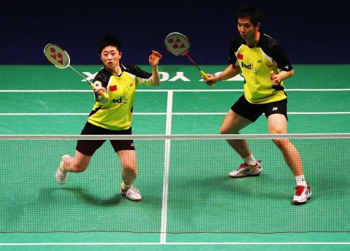
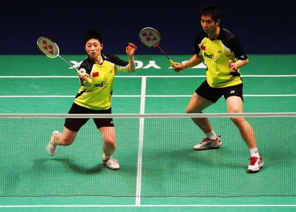

羽毛球
 

羽毛球
羽毛球是一项室内、室外兼顾的运动。依据参与的人数，可以分为单打与双打。及新兴的3V3规则。羽毛球拍由拍面、拍杆、拍柄及拍框与拍杆的接头构成。一支球拍的长度不超过680豪米，其中球拍柄与球拍杆长度不超过41厘米，拍框长度为28厘米，宽为23厘米，随着科学技术的发展，球拍的发展向着重量越来越轻、拍框越来越硬、拍杆弹性越来越好的方向发展。现代羽毛球运动起源于英国。这项活动极富趣味性，很快就在上层社会社交场上风行开来。"伯明顿"（Badminton）即成为英文羽毛球的名字。1893年，英国14个羽毛球俱乐部组成羽毛球协会，即全英公开赛的前身。自1992年起，羽毛球成为奥运会的正式比赛项目。
打发与技巧
常见打法
压后场底线
对羽毛球初学者来说，这是较有威胁的基本打法。它的特点是通过高球把对方推到后场底线，使得对方回球不到位，伺机扣杀或打出短球。这种打法主要以力量制胜，也就是较量后场高、吊、杀技术的高低。运用这种打法首先自己的高球必须打到对方底线，同时也要有和对方进行后场对抗的能力。
攻四方球控制落点
攻四方球是攻击对方场区的4个角落，以快速击球和准确的落点，调动对方前后左右奔跑，打乱对方阵脚，待其来不及回中心位置或回球质量较差时，向其空当部位发动进攻。这种打法，要求运动员本身具有快速、灵活的步法，稳健的防守，以及准确控制落点和强有力的进攻能力。
快拉快吊控制网前
这是最常用的一种积极主动、快速进攻的打法。它的特点是：以进攻性的平高球快压对方于后场两底角，而后吊球或劈杀引对方上网，再迅速上网控制网前，以网前搓球结合推后场底线制造对方回击的困难，从而创造中后场大力扣杀的机会。它要求运动员有较全面的技术，能攻善守，步法、手法快速灵活，特别是要有较细腻的控制网前的技术。学习者通常在掌握了较全面的技术后使用。
后场下压，上网搓、推
这种打法的特点是在后场通过下压击球(扣杀、劈杀或吊球)的进攻技术，快速上网搓或推球取得前场攻势，使后场、前场的进攻紧密衔接，提高攻击的威力。
守中反攻
这种打法是从运动员身材较矮、但较灵活这个特点出发的。它以防御为主结合反攻(扣杀、吊球)，这里包含着让对方多失误、自己尽量少失误的策略思想。怎样才能让对方多失误呢?这要求自己善于控制落点、球路，调动对方在移动中勉强进攻，急于求成出现失误，或给自己制造反攻的机会。那么，怎样又才能使自己尽量少失误呢?这要求自己有快速灵活的步法，能在场区任何一个角落抢救来球，;守住对方的强攻；同时抓住有利的战机，进行出击。
打球技巧
技战术用语
站位与击球
运动员站在羽毛球场上的位置称为站位。站位有两种情况：一种是受限制的站位。如：发球、接发球时运动员的站位，就必须按要求站在规定的区域内（左半区或右半区）；另一种是不受限制的站位，可根据自己或同伴（双打）的需要而选择的站位。如：单打的站位一般在离前发球线1米左右的中线附近，双打站位可根据双打两个运动员的具体战术需要而选择前后或左右的站位。
根据以上对羽毛球场地的划分，又可把不受限制的站位具体分为：左半区站位、右半区站位、前场站位、中场站位、后场站位。
击球是指运动员挥拍击球时，拍与球接触的一刹那。运动员站在左半区迎击对方来球叫做左半区击球，在右半区的击球叫做右半区击球，站在前场、中场、后场的击球，则分别叫做前场击球、中场击球、后场击球。除此之外，根据来球高度的不同，我们又可分为上手击球（高于肩的来球，击球点在肩上）和下手击球（击球点低于肩）。[10]
持拍非持拍手
持拍手是指正握着球拍的手。非持拍手是指没有握拍的手。
在羽毛球运动中，我们经常听说的正手技术、反手技术、正手击球、反手击球等术语。所谓正手技术是指握拍手同侧的技术；反手技术是指握拍手异侧的技术。如：右手握拍的运动员，在击右侧球时所用的技术就称为正手技术，并由此派生出正手发球技术、正手击球技术等技术名称。
在羽毛球运动中，非持拍手的功能主要是在发球时用来持球、抛球；在击球过程中用来平衡身体，以便更有效地击球。
击球基本线路
所谓击球线路是指球被运动员击出后在空中运行的轨迹和场地之间的关系。
羽毛球运动员击球线路之多是无法胜数的，以下只研究决定羽毛球线路规律的几条基本线路。
我们仅以运动员（右手持拍）正手击出三条球路来分析一下球的路线的名称。第一条从自己的右方打到对方的左方（线路与边线平行）可称为直线，第二条打到对方的右方（线路与边线有较大的角度）可称为对角线，第三条打到对方的中线球（线路与边线有较小的角度）可称为中路。同理，反手后场（中场、前场）的三条击基本击球线路，亦可这样称呼。在具体称呼时，可与正手、反手结合在一块。如：正手直线、正手中路、正手对角线、反手对角线等。若在中线击球时，可这样称呼：打到对方场区的左方为左方斜线，打到对方场区的右方为右方斜线，打到中间为中路球。在对羽毛球线路的称呼上应注意如下问题：首先要看击球点和球的落点靠近哪里，击球点靠近右边线，而落点靠近中线，都成为正手中路球。其次要根据击球时所用技术名称，如反手搓球，可成为反手搓直线、反手搓中路球等。
角度拍面方向
拍形角度是指球拍面与地面所成的角度。拍面方向是指球拍的拍面所朝向的位置。
拍形角度可分为七种：拍面向下、拍面稍前倾、拍面前倾、拍面垂直、拍面后仰、拍面稍后仰、拍面向上。
拍面方向可分为三种：拍面朝左、拍面朝右、拍面朝前。
拍形角度和拍面方向控制的好坏对击球质量的影响是非常大的，所以我们必须在每一次击球中认真调整好拍形、拍面，击出合乎质量要求的球来。
击球点
所谓击球点是运动员击球时球拍与球相接触那一点的时间、空间位置。
击球点包括三个方面的内容：第一包括拍和球的接触点距地面的高度；第二包括接触点距身体的前后距离；第三包括距身体的左右距离。对击球点选择得是否合适，将决定着击球质量的好坏，它将直接影响着运动员击球的力量、速度、弧线、落点，最终将导致影响运动员击球的命中率，造成失分，直至失败。因此选择合适的击球点至关重大。选择合适的击球点应做到如下两点：第一判断要准，第二步法移动要到位（步法要快）。只要做到了这两点才能保证调整在最合适的位置，击球点才有保障。
观赛礼仪
正在加载羽毛球
羽毛球运动始终是一项高雅运动。尊重对手，尊重裁判，女士优先，用语文明，讲究举止等等，都为羽毛球文化所倡导。因此，观众在观看这项比赛时应注意：
赛前5分钟提前入座，并保持安静；
颁奖奏获奖队国歌时，应肃立，不应谈笑或做其他事情；
比赛中尽量不要从座位上站起来，更不要随意在看台上来回走动；
不得使用粗鲁、不文明、带有敌意、攻击性或侮辱性语言刺激球员；
观看比赛时不得燃放烟火、向场内抛掷物品；
不破坏公物，不做不文明手势；
观看比赛拍照时，不得使用闪光灯；
比赛馆内严禁吸烟；
观赛时应将手机关闭或设置在振动、静音状态；
不要将锣鼓、乐器等响器带入比赛场内。
比赛规则
计分
（1）采用21分制，即双方分数先达21分者胜，3局2胜。每局双方打到20平后，一方领先2分即算该局获胜；若双方打成29平后，一方领先1分，即算该局取胜。
（2）新制度中每球得分，并且除特殊情况（比如地板湿了，球打坏了），球员不可再提出中断比赛的要求。但是，每局一方以11分领先时，比赛进行1分钟的技术暂停，让比赛双方进行擦汗、喝水等。
（3）得分者方有发球权，如果本方得单数分，从左边发球；得双数分，从右边发球。在第三局或只进行一局的比赛中，当一方分数首先到达11分时，双方交换场区。
比赛设施
场地
正在加载羽毛球比赛场地
羽毛球场为一长方形场地，长度为13.40米，双打场地宽为6.10米，单打场地宽为5.18米。球场上各条线宽均为4厘米，丈量时要从线的外沿算起。球场界限最好用白色、黄色或其它易于识别的颜色画出。按国际比赛规定，整个球场上空空间最低为9米，在这个高度以内，不得有任何横梁或其它障碍物，球场四周2米以内不得有任何障碍物。任何并列的两个球场之间，最少应有2米的距离。球场四周的墙壁最好为深色，不能有风。
羽毛球网
羽毛球网长6.10米、宽76厘米，为优质深色的天然或人造纤维制成，网孔大小在15-20毫米之间，网的上沿应缝有75宽的双层白布（对折而成），并用细钢丝绳或尼龙绳从夹层穿过，牢固地张挂在两网柱之间。标准球网应为黄褐色或草绿色。网柱高1.55米，无论是单打或双打，两根网柱都应分别立在双打场地边线的中点上。正式比赛时，球网中部上沿离地面必须为1.524米高，球网两端高为1.55米。球网的两端必须与网柱系紧，它们之间不应该有缺缝。
羽毛球
羽毛球可由天然材料、人造材料或用它们混合制成。只要球的飞翔性能与用天然羽毛和包裹羊皮的软木球托制成的球的性能相似即可；羽毛球应有16根羽毛固定在球托部；羽毛长64毫米至70毫米。但每一个球的羽毛从托面到羽毛尖的长度应一致；羽毛顶端围成圆形，直径为58毫米至68毫米；羽毛应用线或其他适宜材料扎牢；球托直径25毫米至28毫米，底部为圆形；羽毛球重4.74克至5.50克；非羽毛球制成的球；用合成材料制成裙状或羽毛。
比赛项目
羽毛球比赛分为：男子单打、女子单打、男子双打、女子双打、混合双打、男子团体、女子团体。
单打由两名运动员在场地上将一个羽毛球相互交替击打，使球不落地。落地的一方为输，或没有使羽毛球击打到对方场地，既没有击打过球网，赢者加分。
双打由四名运动员在场地上进行，方法如上，但双打极讲究配合。